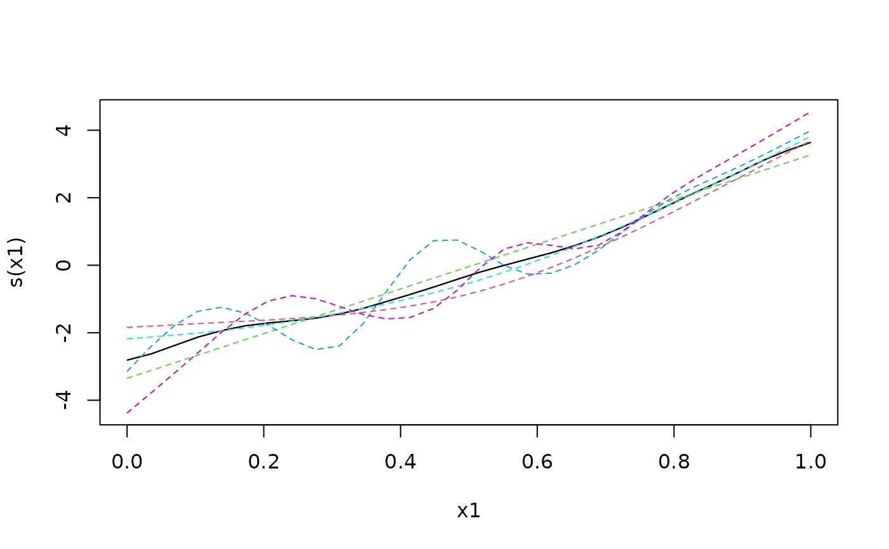

Plot the meta-analytic estimate of a smooth term along with the separate fits in each cohort.
Usage
# S3 method for class 'metagam'
plot(x, term = NULL, ci = "none", legend = FALSE, only_meta = FALSE, ...)Arguments
- x
Object returned by
metagam.- term
The smooth term to plot. Defaults to
NULL, which means that the first term is plotted.- ci
Type of confidence bands to plot around the meta-analytic fit. Defaults to "none", which means the no bands are plotted. Other options are "simultaneous", "pointwise", and "both". Simultaneous confidence bands require that
metagamwas run withnsimnot equal toNULL.- legend
Logical specifying whether or not to plot a legend. Defaults to
FALSE.- only_meta
Logical specifying whether to include the fits for each study, or to only plot the meta-analytic fit. Defaults to
FALSE.- ...
Other arguments to plot.
Examples
library(metagam)
library(mgcv)
## Create 5 datasets
set.seed(1234)
datasets <- lapply(1:5, function(x) gamSim(scale = 5, verbose = FALSE))
## Fit a GAM in each dataset, then use strip_rawdata() to remove
## individual participant data
models <- lapply(datasets, function(dat){
## This uses the gam() function from mgcv
model <- gam(y ~ s(x0, bs = "cr") + s(x1, bs = "cr") + s(x2, bs = "cr"), data = dat)
## This uses strip_rawdata() from metagam
strip_rawdata(model)
})
## Next, we meta-analyze the models.
## It is often most convenient to analyze a single term at a time. We focus on s(x1).
meta_analysis <- metagam(models, terms = "s(x1)", grid_size = 30)
## We can print some information
summary(meta_analysis)
#> Meta-analysis of GAMs from cohorts, using method FE.
#>
#> Smooth terms analyzed: s(x1).
#>
#>
#>
## We can plot the meta-analytic fit together with the individual fits
plot(meta_analysis)

plot(meta_analysis, ci = "pointwise")

## We can also compute p-values and simultaneous confidence intervals, by setting the nsim argument.
## For details, see the separate vignette.
if (FALSE) { # \dontrun{
meta_analysis <- metagam(models, terms = "s(x0)", grid_size = 30, nsim = 1000)
summary(meta_analysis)
plot(meta_analysis, ci = "both")
plot(meta_analysis, ci = "simultaneous")
} # }